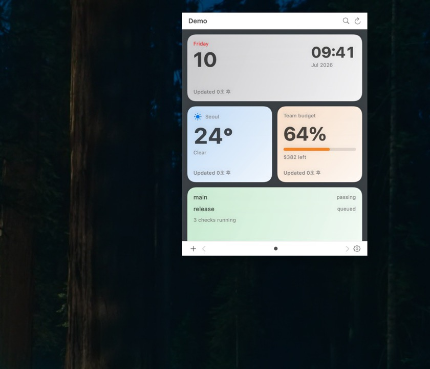
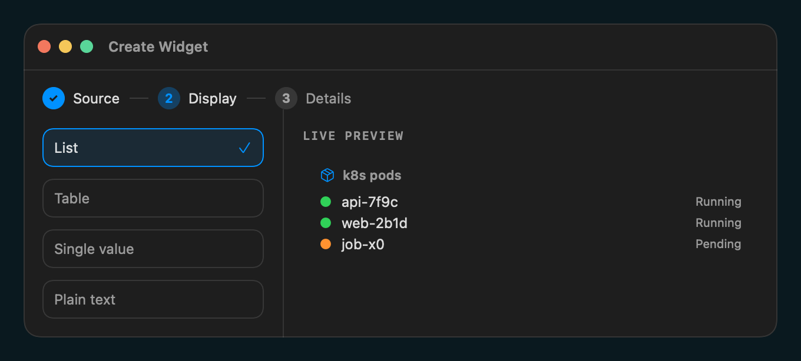

One organized surface
정리된 하나의 표면
Pages, pinned widgets, refresh controls, and search live in one popover. The menu bar stays quiet.
페이지, 고정 위젯, 새로고침, 검색이 하나의 팝오버에 있습니다. 메뉴바는 조용하게 유지됩니다.
One native popover for the menu bar tools you check all day. Turn commands, workflows, and TypeScript scripts into glanceable macOS widgets.
하루 종일 확인하는 메뉴바 도구들을 하나의 네이티브 팝오버로 모읍니다. 명령어, 워크플로, TypeScript 스크립트를 macOS 위젯으로 바꾸세요.
Captured from the running BarShelf app, not a mockup.목업이 아니라 실행 중인 BarShelf 앱에서 캡처했습니다.
BarShelf keeps glanceable tools close without spreading them across a row of tiny icons, browser tabs, and terminal windows.
BarShelf는 자주 보는 정보를 작은 아이콘, 브라우저 탭, 터미널 창에 흩뿌리지 않고 가까운 곳에 정리합니다.
Pages, pinned widgets, refresh controls, and search live in one popover. The menu bar stays quiet.
페이지, 고정 위젯, 새로고침, 검색이 하나의 팝오버에 있습니다. 메뉴바는 조용하게 유지됩니다.
If a command can emit JSON, BarShelf can render it as native UI with scheduling and permission gates.
명령어가 JSON을 출력할 수 있다면, BarShelf는 스케줄링과 권한 게이트가 있는 네이티브 UI로 렌더링합니다.
SwiftUI, SF Symbols, dark mode, app settings, and a real status item. No browser shell.
SwiftUI, SF Symbols, 다크모드, 설정 화면, 실제 status item. 브라우저 껍데기가 아닙니다.

A strong setup combines one primary status widget, two glance widgets, and one operational list so the popover feels useful the moment it opens.
좋은 구성은 큰 상태 위젯 하나, 빠른 확인 위젯 두 개, 운영 리스트 하나를 섞어 팝오버를 여는 순간 바로 쓸모가 보이게 합니다.
Use the largest slot for usage, revenue, build health, or any state that decides your next action.
사용량, 매출, 빌드 상태처럼 다음 행동을 결정하는 정보를 가장 큰 영역에 둡니다.
Weather, calendars, quotas, and inbox counts work best as compact cards with one clear number.
날씨, 캘린더, quota, inbox count는 숫자 하나가 분명한 작은 카드로 잘 맞습니다.
Deployments, tasks, alerts, and recently changed files are easier to scan as short native lists.
배포, 작업, 알림, 최근 변경 파일은 짧은 네이티브 리스트로 훨씬 빠르게 읽힙니다.
Reserve accents for success, warning, and active state so the shelf stays calm and professional.
성공, 경고, 활성 상태에만 포인트 색을 써서 차분하고 전문적인 인상을 유지합니다.
Choose a source, pick a display shape, then save. The live preview is rendered by the same engine used in the popover.
소스를 고르고, 표시 방식을 선택한 뒤 저장하세요. 라이브 프리뷰는 팝오버와 같은 엔진으로 렌더링됩니다.
Run a command, call HTTP, watch files, or start from static data.
명령 실행, HTTP 호출, 파일 감시, 정적 데이터에서 시작할 수 있습니다.
List, table, single value, or plain text with native controls.
리스트, 테이블, 단일 값, 텍스트를 네이티브 컨트롤로 표시합니다.
Validate, hot-reload, package, and install from a repo URL.
검증, 핫 리로드, 패키징, repo URL 설치까지 이어집니다.

Each widget goes through the same scheduler, permission store, cache, and native renderer. Only the data source changes.
모든 위젯은 같은 스케줄러, 권한 저장소, 캐시, 네이티브 렌더러를 거칩니다. 달라지는 것은 데이터 소스뿐입니다.
Wrap tools like gh, aas, or your own script. Declare exactly what can run.
gh, aas, 직접 만든 스크립트를 감쌉니다. 실행 가능한 것을 명확히 선언합니다.
A JSON workflow can fetch, transform, interpolate, and render without custom code.
JSON workflow로 fetch, transform, interpolate, render를 코드 없이 처리합니다.
TypeScript widgets run out-of-process with host-mediated storage, secrets, timers, and exec.
TypeScript 위젯은 별도 프로세스에서 storage, secret, timer, exec를 호스트 중개로 사용합니다.
BarShelf is open source, notarized for direct download, and ships with CLI tooling for widget authors.
BarShelf는 오픈소스이며 직접 다운로드용 공증이 되어 있고, 위젯 제작자를 위한 CLI를 함께 제공합니다.
BarShelf-*.zip → /Applications → Double-click
Download the latest signed build from GitHub Releases.
GitHub Releases에서 최신 서명 빌드를 받으세요.
brew tap Open330/barshelf \ https://github.com/Open330/barshelf brew install --cask barshelf
Install through the project tap.
프로젝트 tap을 통해 설치합니다.
barshelf new my-widget barshelf validate ./my-widget barshelf pack ./my-widget
Scaffold, validate, and package widgets locally.
로컬에서 위젯을 생성, 검증, 패키징합니다.
One icon, native widgets, scriptable from the tools you already trust.
아이콘 하나, 네이티브 위젯, 이미 신뢰하는 도구로 스크립팅하세요.